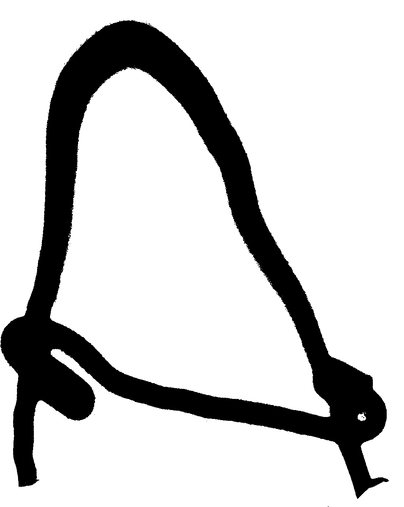
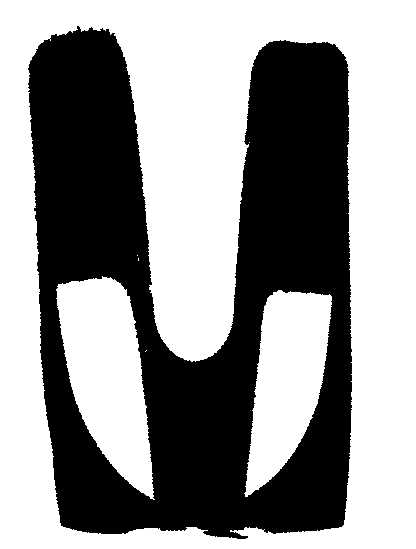

throwing shade
A typeface based
☉n time and place
☀️ Using light three ways
- Laser cutting three dimensional forms for the letters of the latin alphabet
- Trying different light sources to create shadows around the form
- Using cyanotype or a similar process to print the shadow-based letters
- Thinking about shadows from outlines or the counters
- Considering how legible / recognizable I want the letters to be
☀️ The less-corporeal version
(with apologies to Ingrid)
(with apologies to Ingrid)
- Starting with one location, changing over time
- Next allowing for a chosen location | requesting to know where someone is | someplace random
- Potentially leaving the page open lets it change over time; does it have traces of where the light was like when dew dries as the shade moves?
☀️ Who else?
☀️



